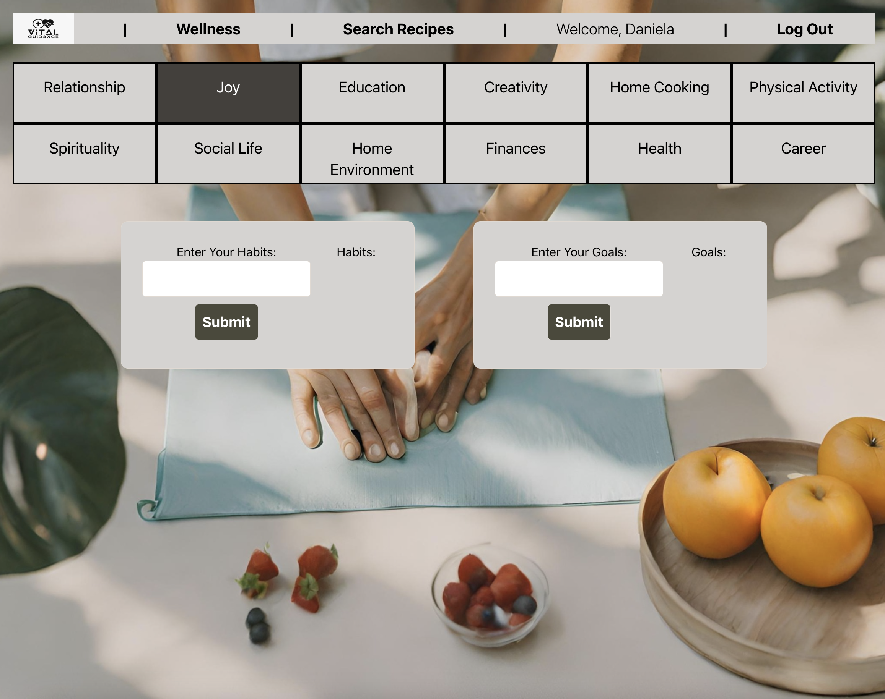
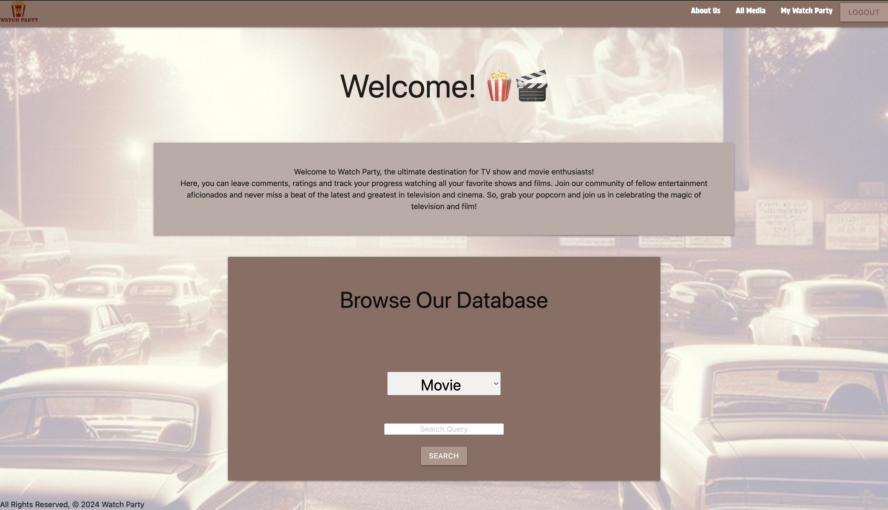
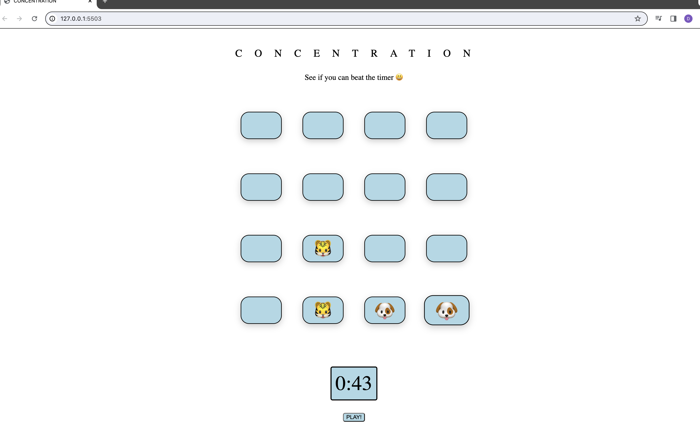

Vital Guidance is a full-stack MERN health application empowers users to track personal goals and habits seamlessly. Integrated with an API, the platform facilitates access to a diverse range of nutritious recipes, enhancing user experience and promoting healthier lifestyles.
Javascript, Mongoose, Express, React, Node, Tailwind, Edamam API

Watch Party is a dedicated social media platform catering to enthusiasts of movies and TV shows. The integration of an API enables users to effortlessly save their favorite media selections directly to their Watch Party profiles, enhancing their personalized entertainment experience.
Python, Django, HTML, CSS, JavaScript, PostgreSQL, Materialize, TMDB API

My Reads is a personalized book management application designed for tracking your reading progress and managing your reading list. Users can easily log books they've read and compile a curated list of books they intend to read, fostering a streamlined approach to personal reading management.
HTML, CSS, Express, Node, Mongoose

Concentration is an engaging memory game that tests players’ ability to recall the placement of animal emojis. Designed to enhance cognitive skills, the game offers a stimulating challenge while providing entertainment and mental exercise.
Javascript, HTML, CSS